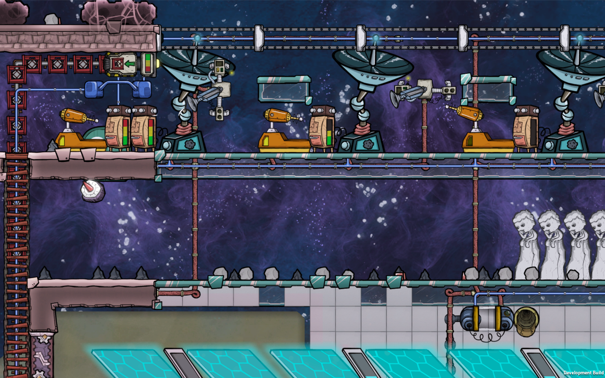
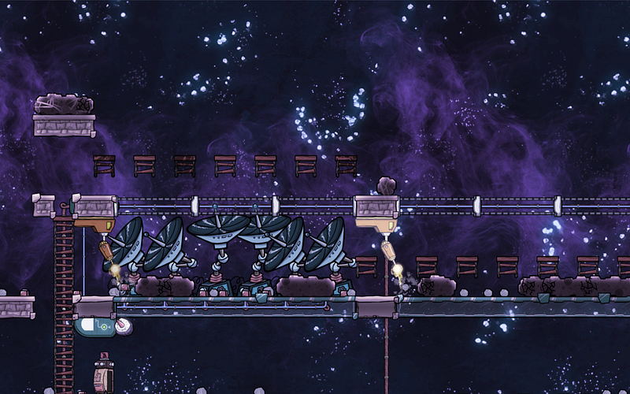
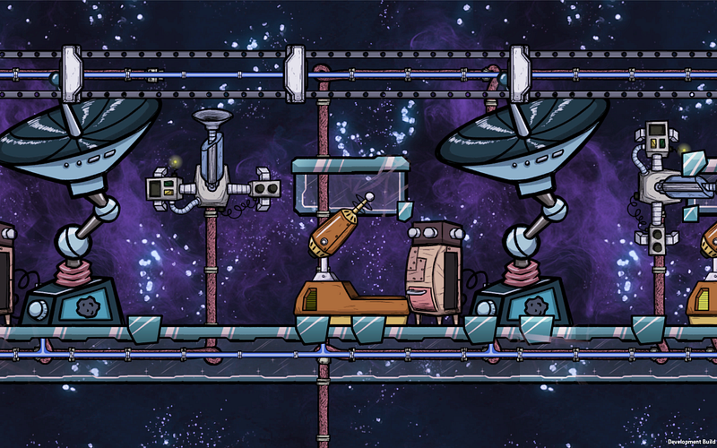
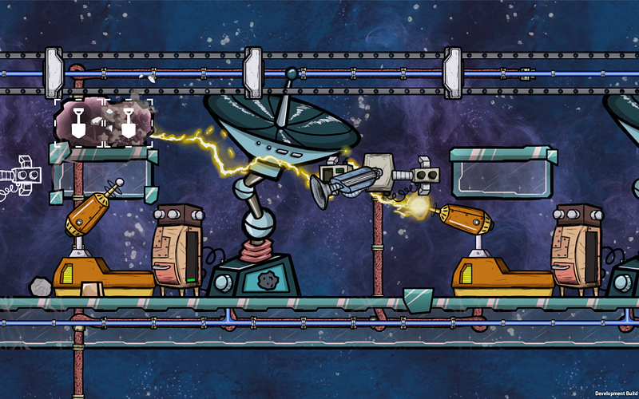
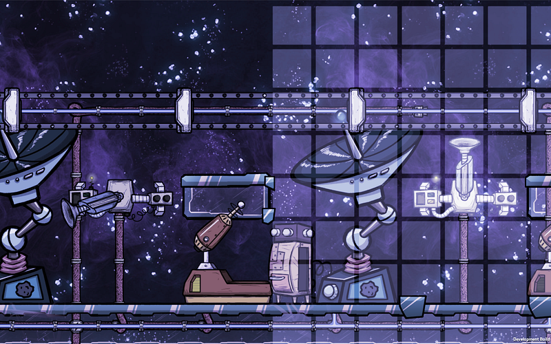
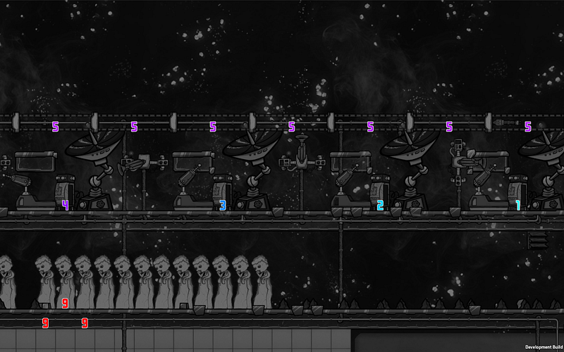
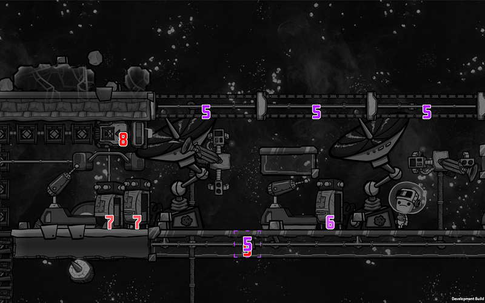
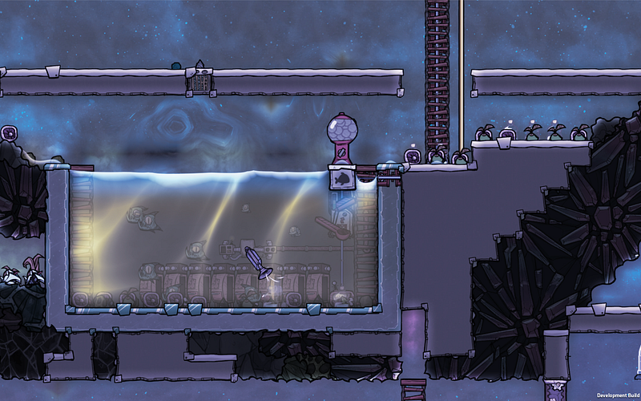

Self Cleaning Bunker Door and Space Scanners
Self Cleaning Bunker Door and Space Scanners

This is a pattern that I came up with while trying to organize the bunker doors, meteor scanners, robot miners, and sweepers.
The basic idea is to
- Protect space scanners against meteors using the bunkers
- Place enough number of space scanners around to improve detection quality
- Make sure nothing gets entombed with regolith and such
- Clean up any regolith and/or iron that gets left behind
The Digging
The placement of bunker tiles is a no brainer, so let’s skip to the more interesting parts. Once the bunker doors open, we can expect the regolith that has accumulated on top the doors will drop down.
There are clever ways to make this regolith disappear, but I find it borderlines cheating, so I wanted to tackle this the “proper” way.
To get rid of the regolith, we will first have to mine it, so obviously the robot miner is a natural fit. The only problem is that the robot miners can also be entombed by the falling regolith, and when that happens, the robot miners can’t dig themselves out, and they just stop working.

At first I conjured up a scheme like the above, where the robot miners would be slapped onto bunker tiles, upside down. This worked great, until I realized that there’s no way to clear the regolith above the bunker tiles.
The regolith will remain atop, and even though we’re in the vacuum of space, heat can be conducted through touching elements. The regolith will heat the bunker tiles, and the bunker tiles will heat the robot miners. Eventually the miners will overheat.
What this brings out to light is the fact that we will have to remove the junk out of the way as much as possible in order to avoid crucial parts of the system heating up. Of course, if you have space materials like thermium you can certainly build the miners with those and forget about the temperature, but you want solar energy before that, don’t you ? :)
The glass ceiling
So the trick I employed was to have a small glass ceiling over the robot miners. The point here is to avoid having regolith fall directly over the robot miners, and at the same time allow sun light to fall underneath to the solar panels.

Of course, you need to make sure that the regolith on top of the glass ceiling can also be removed. For this, we organize a chain of robot miners, each with no more than 6 tiles between them.
This width is the maximum distance you can have between robot miners with ceilings and still be able for the neighboring miner to clear out one of the two ceiling tiles of any cruft. In this setup each miner needs neighboring miners on both sides, because the neighboring miner can only clear above one of the two ceiling tiles.

Cleaning Up The Mess
The next bit is clearing up the dug out regolith and the iron from the meteors.
That can easily be done using the sweepers, but here’s the thing: If you want to cover a relatively wide area, you probably don’t want to use a sweeper and a conveyer loader for each section, as the conveyer loader will each consume energy.
The trick is, then, to have regular storage bins at the right points so that two adjacent sweepers can effectively relay the contents from one location to the other.
The sweepers can reach anywhere within a 9 x 9 square (provided there are no obstacles), and in this case we should be able to place storage bins at the both ends of this zone. The trick is to have the next sweeper’s range overlap by just 1 tile to the side.

In the above image, you can see that the storage bin in the middle is accessible from both sweepers.
Once you establish this chain of sweepers and storage bins, you just need to put proper priorities between them, like so:

In the case of the above image, materials will be swept from right to left.
This will eventually culminate at the left most end, which in my case looks like this:

There are a couple of priority 7 storage bings, and a priority 8 conveyer loader, which takes the regolith and iron into a bath of polluted water to cool them down.

And voila, you now have regolith and iron to work with, in moderate temperatures.
One minor note: make sure you make your sweepers and conveyers using steel. At least the conveyer. Otherwise the regolith will easily break your conveyer.